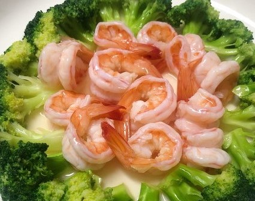
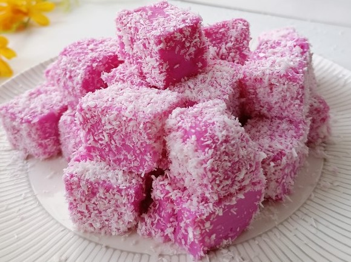

Ångat apelsin med ägg
Ingredienser
- 4 apelsin
- 4 ägg
- 30g vitt strösocker
Steg
- Tvätta apelsinerna och skär ner fruktbottnen ca 1/4 som lock på
- Gröp ur fruktköttet och pressa ur saften
- Tillsätt 4 ägg och sockeri apelsinjuice Tillsätt 4 ägg i apelsinjuice
- Häll blandningen i apelsinskalkoppen
- Förslut plastfolien och stick hål på några små hål
- Ånga på medelvärme i ca 30 minuter
Räkor och broccoli

Fakta :
Broccoli med räkor, näringsrik och hälsosam, familjemedlemmar älskar att äta det
Relaterade länkar
link1 link2Ingredienser
- 1 broccoli
- 10 räkor
- 2 matskedar ostronsås
- 1 matsked sojasås
- 5 gram olja
Steg
- Skär broccolin i små bitar, tillsätt lite olivolja och salt i vattnet i grytan, tillsätt broccolin i Kokande vatten i en halv minut
- Lägg broccolin på tallriken
- Koka salladslök,ingefära,salt och räkor
- Ostronsås, lätt sojasås, vatten för att göra en sås, lägg lite olja i grytan, tillsätt såsen och rör om tills den blir tjock.
- Häll såsen jämnt på räkorna och broccolin
Fruktpudding

Ingredienser
- 500g mjölk
- 35g socker
- 60g Majsstärkelse
- 20ml pitaya juice
Steg
- Blanda mjölk med socker,majsstärkelse och pitaya juice
- Lägg blandningen i en kastrull och värm den på låg eld, rör hela tiden
- Häll i en behållare för att svalna, slå in i plastfolie och kyl över natten
- Häll blandningen i apelsinskalkoppen
- Skär i små bitar och linda in i kokospasta